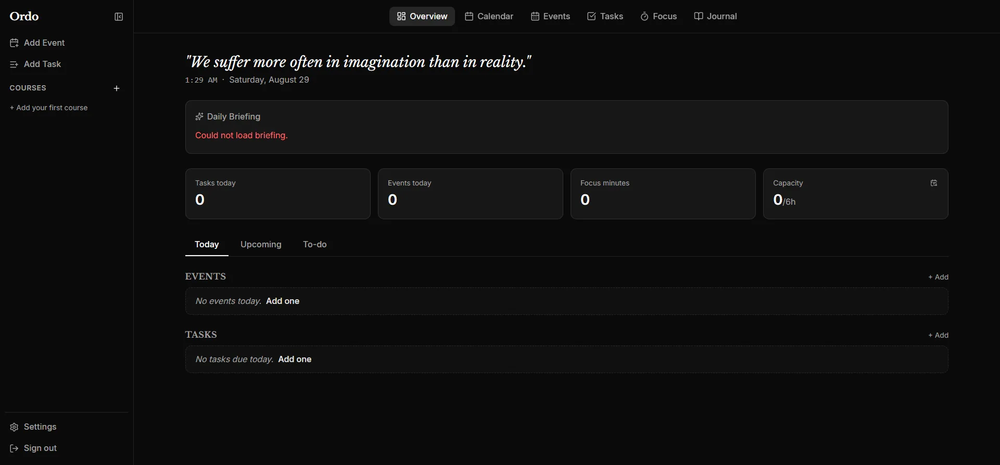
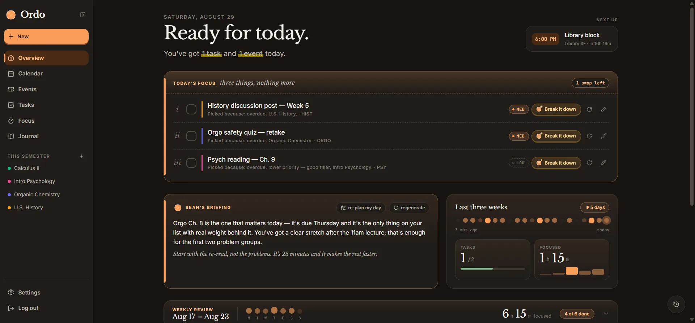
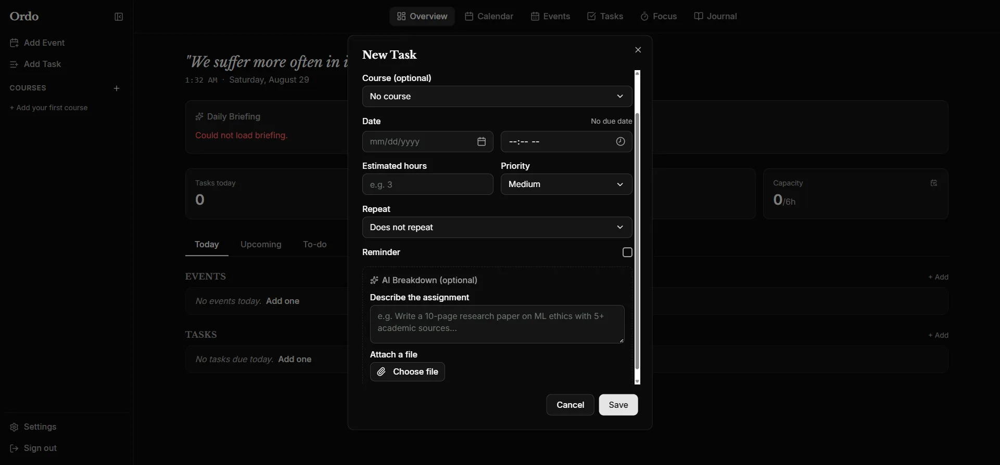
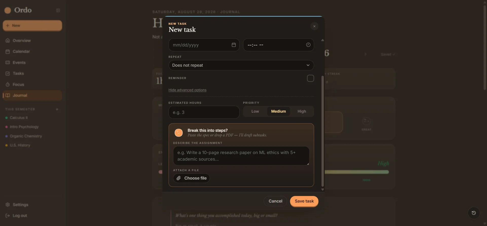
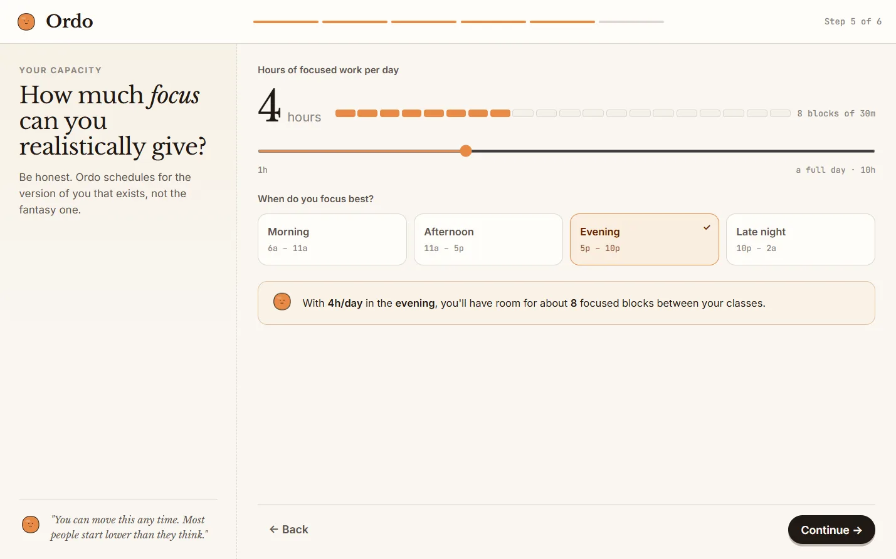
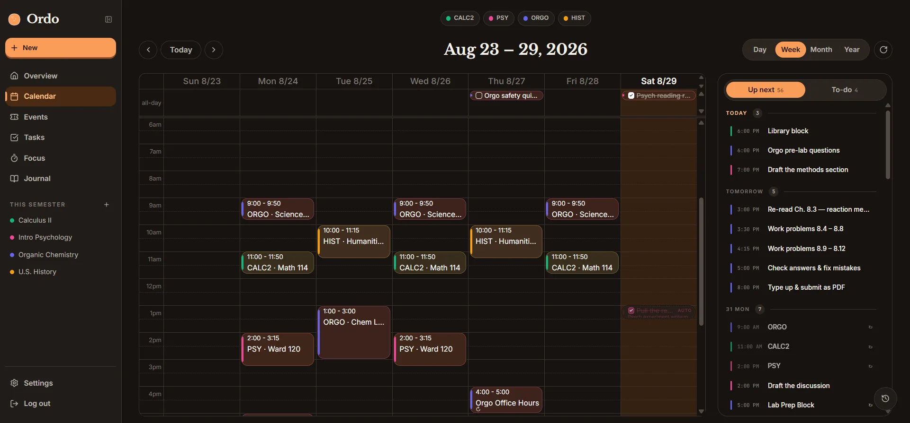
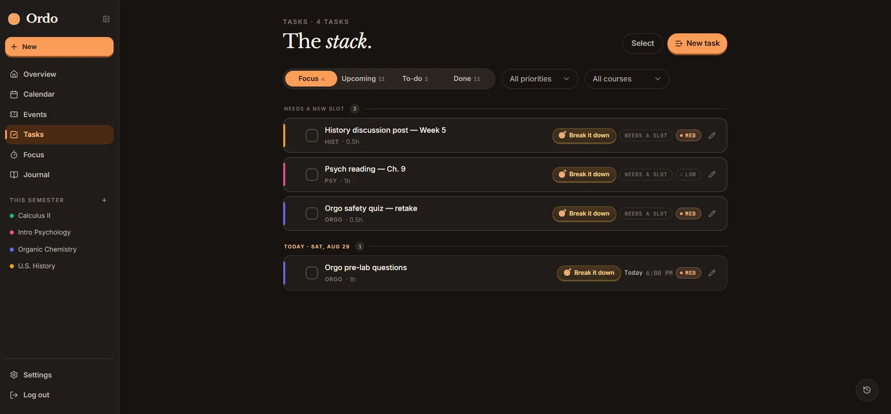
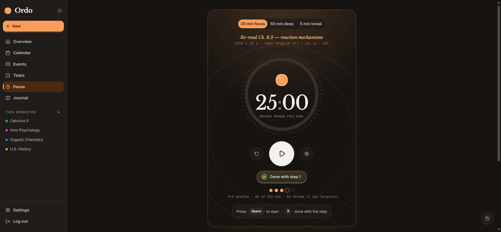
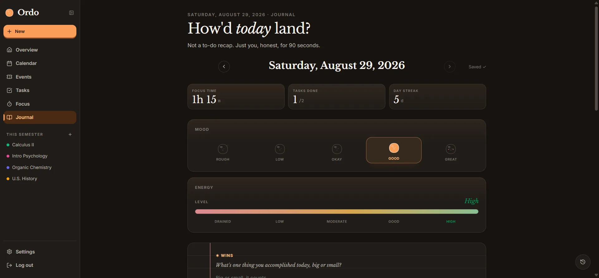

Overview
Ordo takes a semester of syllabi and turns it into a plan with actionable steps. It reads your courses, breaks assignments into pieces small enough that it's hard not to start, and fits them around the week you actually have. Every morning it hands you the things you need to prioritize most and tells you why they're important.
Where it started
Ordo started as a problem I couldn't solve for myself.
The shift from high school to college hit me during my freshman year at the University of Illinois at Urbana-Champaign. High school was simple: one class, one teacher, one assignment due tomorrow. College took that and split it into several smaller and much more meticulous pieces. A lecture on Monday, a discussion section on Wednesday that assumed I'd already reviewed the lecture, a lab report due Friday, all while working on a semester-long group project that wouldn't be graded for three months and therefore never felt urgent (until it eventually was).
The stakes changed too. In high school, a test covered two weeks of material, and there were enough of them that one bad grade washed out by the end of the quarter. My first college midterm covered six weeks and was worth a chunk of the entire course grade. I tried my usual study routine that had always worked for me — cramming the night before — but test day showed me that I was in desperate need of a new strategy.
What surprised me most, however, were my real points of struggle. I could sit through a lecture and follow it. I could read through the material and understand it. But the hard part was deciding what to work on Tuesday night when five things were technically due within ten days, estimating how long a problem set would really take, and then, hardest of all, following the plan I made on Sunday once Tuesday showed up with its own priorities.
I tried the usual fixes. Google Calendar, to-do lists, Notion. All of them were good at holding information but bad at making decisions. Google Calendar told me when my classes met. To-do lists told me what I needed to do. Notion combined both with even more customizability, but took time to set up and navigate. Above all, however, none of them told me what to do at 7pm on a weekday, or reshuffled themselves when I fell behind (which I found I somehow always did).
All of these frustrations turned into my design brief for Ordo. Every tool I tried treats 10am Monday and 9pm Thursday as the same hour, but they're not even close. A tool that can't tell those apart can't plan my work. So Ordo's job was never to hold the list. Every student already knows the list is long. Its job is to answer one question: what should I open right now?
v0 → today
The first version of Ordo was basically a to-do list with a calendar slapped onto it. It worked, in the sense that it ran. I used it for about two weeks before realizing it had exactly the flaw I built it to fix. I also realized that I had pretty much built a very tidy place to look at my problems.
Before
Ordo v0

A flat list of assignments and a month grid. Nothing knew how long anything took, so nothing could be scheduled — only displayed back at you.
After
Shipped

Same data, three new questions answered: how long, when, and what first. That's the difference between a list and a plan, and it all lands in Today's Focus at the top.
Time estimates
v0 asked how long each thing would take, up front, in an empty box. Nobody answers that honestly — including me, and I wrote the field. It still exists under advanced options, but the front of the form now asks for the assignment and lets Claude break it into steps with its own estimates. Correcting a guess is a far easier ask than producing one.
Setup
Entering one semester by hand took me forty-five minutes for four courses. That is the real reason v0 died — I couldn't talk myself into doing it a second time, and I was the one person who wanted the app to work. Syllabus upload replaced it: the app does the typing, you just check its work.
The daily ask
v0 opened on everything due this month, which is an excellent way to get someone to close an app. Today it opens on three things, each with the reason it was picked. Every other view is still there, one tap away.
The task form is where that first change is easiest to see.
Before
New task, v0

An empty Estimated hours box, given equal billing with the due date — the one field nobody can answer honestly until the work is already underway.
After
New task, shipped

The estimate moved under advanced options, and the space it freed went to Bean offering to draft the steps from a description or a dropped PDF.
Meet Bean
The way Ordo looks today came from a single piece of feedback. A friend of mine was the first person other than me to use the app properly. When I asked what he thought, he said it worked fine, but then admitted he didn't really want to open it again (ouch!). He called it stale and suggested a couple of changes: give it a mascot, and make the thing look like it wants to be opened again.
My first instinct was that this was a cosmetic note and I had other things to work on. But, I was wrong. I realized that Ordo asks for an unreasonable amount of trust — it wants to tell you how to spend your evening, every evening — and at that point it was delivering those verdicts with all the warmth of a tax form. This would be fine for something you open twice a semester, but it's the wrong register entirely for something that has to become a habit.
So everything warmed up! I went for paper tones instead of dashboard gray. I used a serif for anything the app says to you. I gave color an actual job rather than just decoration: which course a block belongs to, whether a task is scheduled or still floating, when a focus session is running. The inspiration was a real, physical planner made to be used every day.
And Bean! He is a coffee bean, he has opinions, and he shows up in the morning briefing, the focus timer, and anywhere else I could fit him in (without him being too much of a distraction)! His expression tracks what is going on — proud when you close out a week, sleepy well past midnight, and faintly concerned when the plan has quietly come apart. The one rule I set was that he never blocks anything and never congratulates you for something you didn't do. Looking back at it now, my friend was definitely right about the app feeling stale — I can't imagine Ordo without Bean.
Bean, in six moods
Inside Ordo
That warmth had to survive contact with the parts of the app that do the real work. Onboarding is the hardest test of it: the scheduler needs real numbers before it can do anything useful, so the app has to ask for genuine effort up front and make every question feel worth answering.

Capacity is hours, not a vibe. The scheduler needs a real number, so the question is answered with a slider and shown back as blocks of thirty minutes.
Step 5 of 6, counted out loud. Onboarding asks for real work, so it says exactly how much is left.
The consequence, before you commit. Four hours in the evening becomes "room for about 8 focused blocks between your classes" — the input translated into the thing you actually care about.
The rest of the app, briefly




A 60-second walkthrough, start to finish on one assignment
Highlights
- 01
Assignments get broken down by Claude, then scheduled against the week you actually have — class blocks, the focus you can realistically give, real deadlines. Not a list of what exists. A plan that fits.
- 02
Drop a syllabus in during onboarding and Claude pulls out every assignment and due date. Nobody has ever enjoyed typing those in, and now nobody has to.
- 03
A short briefing each morning: what matters today, how the week is going, one suggestion worth acting on. Cached per day, so it stays fast and doesn't quietly set my API bill on fire.
- 04
A focus timer that tracks time per subtask, logs the session, and counts a streak — planning and doing sit in the same place, which leaves less room to drift off to a different tab.
- 05
Journal entries are encrypted at rest (Fernet, with key rotation). The briefing sees your mood and energy and nothing else — never a word of what you wrote.
Under the hood
The scheduler is the core Ordo. It takes tasks already broken into subtasks with estimates and fits them into your week around class blocks, focus windows, daily capacity, and deadlines. Google Calendar comes in over read-only OAuth, so anything already on there counts as busy. It reruns on every login, which matters more than it sounds: the plan has to survive you falling behind, because you inevitably will.
Claude's other job is reading. During onboarding (and later on, if you add a new course) it parses syllabus PDFs and pulls out the whole course schedule — dates, weights, recitation times, and mode.
Deep dive — AI decomposition, cache first
A syllabus PDF can run 30k tokens. Paragraphs get scored against the task and only the relevant ones travel, Haiku handles most calls with Sonnet as fallback, and identical requests never reach the model twice.
# Seen an identical task before? Return the saved breakdown, skip the model.
fp = _fingerprint(task["title"], task.get("due_date"), body.description, file_head)
cached = sb.table("decompose_cache").select("result").eq("fingerprint", fp).maybe_single().execute()
if cached and cached.data:
return DecomposeResponse(subtasks=[SubtaskSuggestion(**s) for s in cached.data["result"]])
consume_ai_credit_or_429(user_id)
# A syllabus PDF can run 30k+ tokens. Score its paragraphs against this task
# and keep only the most relevant bits: cheaper calls, sharper subtasks.
context = _filter_task_context(extracted_file_text, title=task["title"],
course_name=course_name, description=body.description)
# Haiku handles most tasks; fall back to Sonnet only when it struggles.
# The shared system prompt is marked for prompt caching to cut repeat cost.
subtasks = call_ai_with_retry(
ai,
model=ANTHROPIC_MODEL_HAIKU,
fallback_model=ANTHROPIC_MODEL_SONNET,
system=make_cached_system(SYSTEM_PROMPT),
messages=_build_user_prompt(task, context, decomposition_style, target),
parse_fn=_parse_subtasks,
)
# Memoize so the next identical request is free.
sb.table("decompose_cache").upsert({"fingerprint": fp, "user_id": user_id,
"result": [s.model_dump() for s in subtasks]}).execute()Deep dive — architecture
Clients hit Postgres directly for basic reads and writes, locked down with row-level security. The backend only exists for what a client shouldn't be trusted with: calling Claude, running the scheduler across the whole task graph, syncing calendars.
Clients
bearer
Service
per-user AI quota
role
Data & AI
"The scheduling algorithm was relatively easy. Getting Today's Focus to feel trustworthy enough so users would feel comfortable following it took a lot longer than I expected."
Reflection
I was sure the hard part would be the scheduling algorithm, but it wasn't. Constraint solving is a well documented problem with plenty of prior work to borrow from. The hard part was trust. If you open the app, take a look at your Today's Focus, and think "that's not what I should be doing today," the whole point of Ordo falls apart. Getting the priority logic right, especially for long-horizon projects that don't show up for a while, took more passes than everything else combined.
One decision I'm glad I made early is the journal encryption at rest with key rotation, with the briefing only ever seeing mood and energy, never what you wrote in your journal entries. It would have been easy to skip, but I wanted to build Ordo with user's privacy in mind from the start.
Ordo still can't force me to start the problem set I've been avoiding the whole week, that freshman is beyond saving. But it does make that first step seem much more approachable, and it turns out that was most of the fight.